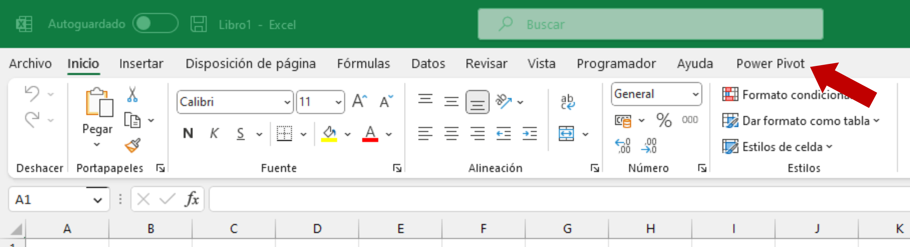

En el post anterior hemos visto cómo crear un gráfico de dispersión multiserie a partir de una tabla de datos arreglados, en la que una columna proporciona los criterios para la agrupación en clases; para conseguir diferenciar los puntos individuales construíamos dos nuevas columnas en la misma tabla de datos original.
Excel proporciona otro método para añadir columnas modificadas, que parte del modelo de datos incorporado en la hoja de cálculo a partir de la versión 2013.y que se ha refinado y consolidado a partir de la introducción de Power BI y de Excel 2016.
Cómo hacer un gráfico de dispersión desde el complemento Power Pivotde Excel
Queremos hacer un gráfico de dispersión de los datos de flipper_length_cm (longitud de la aleta en cm) frente a bill_length_cm (longitud del pico en cm)
Para utilizarlo (ver indicaciones de Soporte Microsoft), tenemos que activar el complemento Power Pivot en Excel. Para hacerlo, iremos al Menú>Opciones>Complementos, y en la parte inferior, en Administrar:, seleccionaremos Complementos COM>Ir
Marcamos las opciones Microsoft Power Map for Excel y Microsoft Power Pivot for Excel.
En el menú principal de Excel debe aparecernos ahora la opción Power Pivot.

A continuación, abrimos el dataset pinguinos.csv y lo guardamos como Libro Excel pinguinos.xlsx (Power Pivot sólo estará activo si la hoja de cálculo tiene este formato).
Con el cursor dentro de nuestra tabla de datos, seleccionamos Menú> Power Pivot> Agregar a modelo de datos.
Esto tiene tres efectos:
- convierte nuestra tabla de datos al formato de tabla de Excel, y
- Añade la tabla a un nuevo modelo de datos de Power Pivot
- Excel nos abre la ventana del administrador del modelo de datos de Power Pivot
Excel mantiene esta tabla en memoria sin alterar nuestra tabla original, como podemos verificar cerrando la ventana (Archivo> Cerrar), si bien, como vimos antes, ha convertido nuestra tabla de datos en una tabla Excel.

Hacemos click en Administrarpara volver a nuestro modelo de datos. Vamos a crear dos nuevas columnas en el el modelo, que como veremos, no afectarán a la tabla original. Para añadir una columna, dentro de Power Pivot, seleccionamos Menú>Diseñar>Agregar
La fórmula que vamos a utilizar a continuación es una fórmula del lenguaje DAX Tabla pinguinos: blancos Diferencias Excel, M y DAX